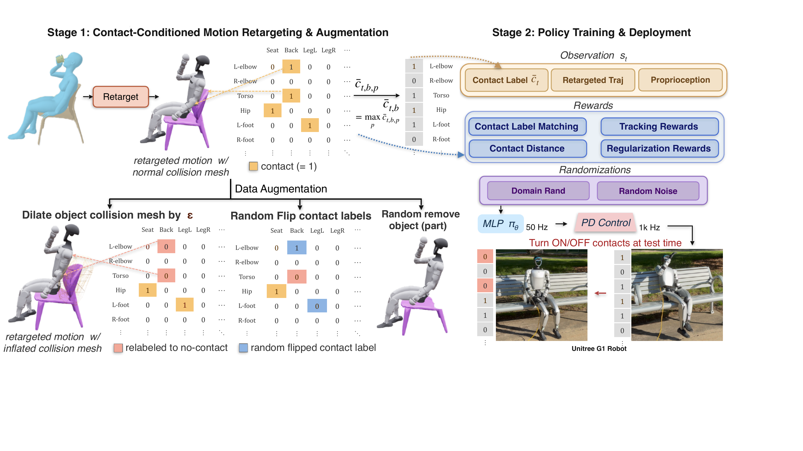
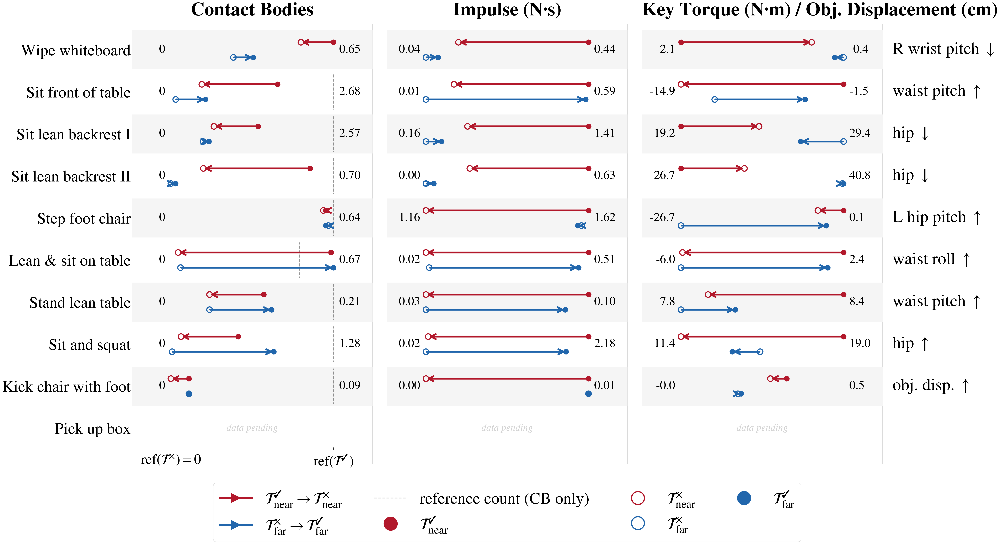
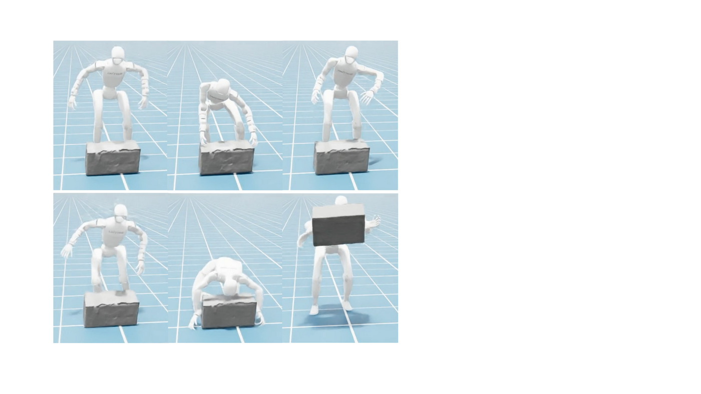
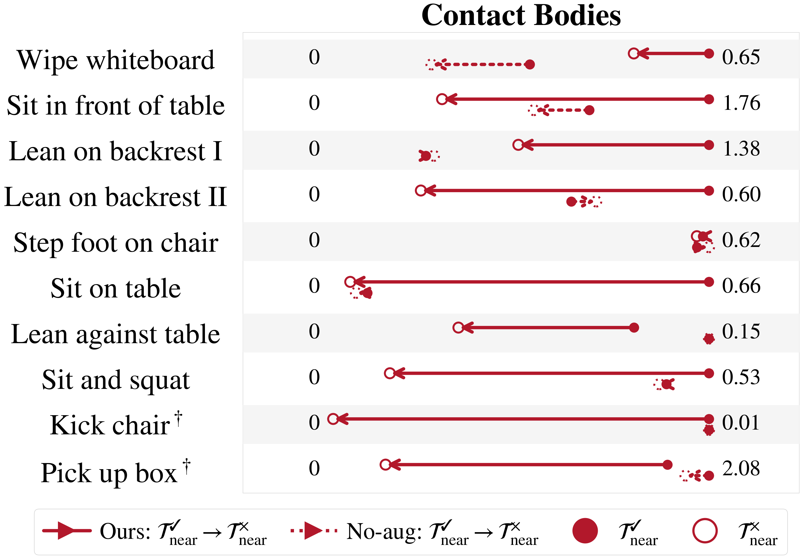

Abstract
Keypoint tracking alone is insufficient for object interaction tasks such as sitting on a chair, wiping a board, or pushing furniture, where the robot can reach the correct pose without making meaningful physical contact with the object. We present ContactMimic, a learning framework that tracks explicit part-level binary contact commands alongside keypoint trajectories. ContactMimic is made possible through the use of contact-following rewards and a trajectory augmentation scheme aimed at breaking the correlations between keypoint trajectories and contact labels. The resulting policy successfully decouples contact behavior from keypoint geometry, and achieves precise physical contact as well as contact-controllability (produce or suppress contact during deployment as desired). Simulation experiments across 10 diverse human–object interaction motions confirm that ContactMimic exhibits contact controllability that enables it to complete manipulation tasks without task-specific rewards, while also outperforming keypoint-only trackers on contact-relevant tasks. Ablations confirm the necessity of the proposed trajectory augmentation scheme, and sim-to-real deployment validates contact controllability in the real world across 5 different motions.
Keywords: Humanoid Loco-Manipulation · Motion Tracking · Contact Modeling
Overview Video
Supplementary video: method overview and real-world contact-controllability results on the Unitree G1.
Method
ContactMimic is a contact-conditioned keypoint tracker πθ(at | pt, t, t) that takes as input proprioception, reference keypoint targets, and a binary per-body contact label over contact-capable bodies (pelvis, torso, hips, knees, ankles, shoulders, wrists). The added contact channel disambiguates tasks that share the same pose — wiping vs. waving, sitting vs. squatting — and provides fine-grained control, e.g. sit in a chair without leaning on the back.

Contact-aware rewards
Alongside standard tracking and regularization rewards, two contact-following terms compare the reference contact label to the actual body-part–object-part contact state:
- Contact-label matching — balanced accuracy of true/false contacts (a TP−FP variant is used for sparse-contact motions).
- Contact distance — pulls parts that should contact toward the surface and pushes parts that should not contact away.
Breaking keypoint–contact correlation
In raw human–object data, a motion usually appears with only one contact pattern, so a policy can ignore the command and infer contact from keypoints. We generate paired motions that share keypoint structure but differ in contact via three composable augmentations:
- ① Contact-label flipping — keep the trajectory, flip task-relevant labels.
- ② Object removal — remove the object, zero the labels, keep the keypoints.
- ③ Inflated geometry — inflate the target collision mesh so the retargeter routes around it.
Contact Control Transfers to the Real World
We replicate the contact-controllability study on hardware. For each motion we deploy the policy with the same keypoint trajectory but toggle the contact command from contact ✔ to contact ✘. When commanded to make contact, the policy commits to the physical interaction; when commanded to suppress it, the policy follows a similar pose while staying just off the surface. For the lean-on-backrest motions we additionally vary whether the reference keypoints are near or far from the object, giving the full near/far × ✔/✘ controllability grid. Every condition shows all 5 real-robot trials.
| Motion | Success criterion | contact ✔ | contact ✘ |
|---|---|---|---|
| Wipe whiteboard | Hand contact leaves a visible trace ⇔ contact ✔ | 5/5 | 5/5 |
| Sit in front of table | Full seat contact + hands on table ⇔ contact ✔ | 4/5 | 5/5 |
| Lean on backrest I | Sustained torso–backrest contact ⇔ contact ✔ | 9/10 | 10/10 |
| Lean on backrest II | Sustained torso–backrest contact ⇔ contact ✔ | 10/10 | 9/10 |
| Sit and squat | Seated posture ⇔ contact ✔, else squat posture | 5/5 | 5/5 |
Contact Control Works in Simulation
For the same keypoint trajectory, we command the policy to make task-relevant contact (τ✔) or not (τ✘), on both near keypoints (original HUMOTO trajectories) and far keypoints (inflated away from the surface). Across all four trajectory sets, the number of contacts, contact impulse, and key-joint torque all move as commanded when contact is toggled off.


Keypoint Control Alone Is Insufficient
Compared against BeyondMimic, a state-of-the-art keypoint-only tracker, ContactMimic achieves substantially higher contact metrics at comparable tracking accuracy (MPJPE) — and, for free-object motions, actually moves the object. Keypoint tracking alone is an incomplete task specification.
Our data augmentation scheme is important

Policy Representations Encode Runtime Contact State
We deliberately do not feed runtime contact sensing to the policy, reasoning that contact state can be inferred from proprioception. A simple linear probe on the policy's inputs and intermediate representations recovers the runtime contact state with high accuracy — well above chance — confirming that the policy maintains an internal sense of its actual contact state from proprioception alone.
BibTeX
@inproceedings{contactmimic2026,
title = {ContactMimic: Humanoid Object Interaction via Contact Control},
author = {Anonymous Authors},
booktitle = {Conference on Robot Learning (CoRL)},
year = {2026},
note = {Under double-blind review}
}